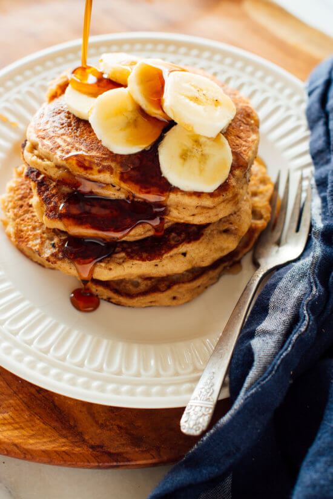

Whole Wheat Banana Pancakes

Description
These banana pancakes are so fluffy, no one will guess they’re made with whole wheat flour! Top these whole wheat pancakes with peanut butter and sliced bananas for extra protein and fiber
Ingredients
- 1 cup whole wheat flour
- 1 tablespoon baking powder
- 1/2 teaspoon cinnamon
- 1/4 teaspoon sea salt
- 2/3 cup almond or oat milk
- 1/2 cup mashed banana
- 1 large egg
- 2 tablespoons maple syrup or honey
- 2 tablespoons unsalted butter or coconut oil
Steps
- If you’re using an electric skillet, preheat it to 350 degrees Fahrenheit now. In a medium bowl, combine the flour, baking powder, cinnamon and salt. Whisk to blend.
- In a smaller bowl, combine the milk, mashed banana, egg, maple syrup, butter and vanilla. Whisk until blended. Pour the liquid mixture into the flour mixture and mix just until combined.
- If you are not using an electric skillet, heat a heavy cast iron skillet or nonstick griddle over medium-low heat. You’re ready to start cooking pancakes once a drop of water sizzles on contact with the hot surface. If necessary, lightly oil the cooking surface with additional butter or coconut oil, carefully wiping up excess with a paper towel (nonstick surfaces likely won’t require any oil).
- Using a ⅓-cup measuring cup, scoop the batter onto the hot skillet, leaving a couple of inches around each pancake for expansion. Cook until small bubbles form on the surface of the pancakes, 2 to 3 minutes (you’ll know it’s ready to flip when about ½-inch of the perimeter is matte instead of glossy).
- Flip the pancakes, then cook until lightly golden on both sides, 1 to 2 minutes more. Repeat the process with the remaining batter, adding more butter or oil and adjusting the heat as necessary.
- Serve immediately or keep warm in a 200 degree Fahrenheit oven. If desired, top individual servings with a spread of peanut or almond butter and/or sliced bananas, and serve with more maple syrup or honey on the side.
- Leftover pancakes can be stored in the refrigerator for up to 3 days, or frozen for up to 3 months. To reheat, stack leftover pancakes and wrap them in a paper towel before gently reheating in the microwave.